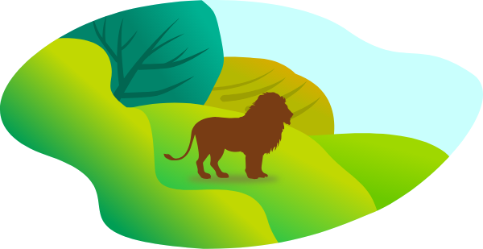
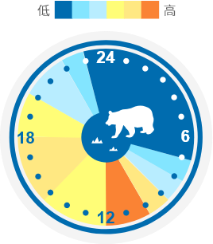
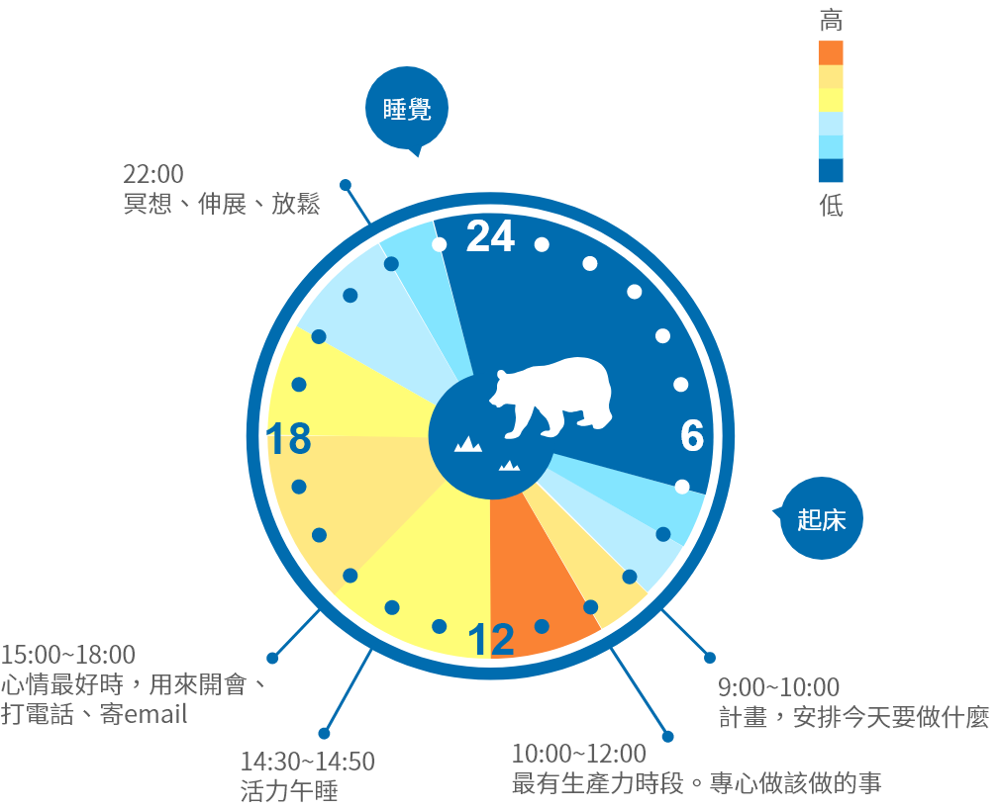

測驗結果
你的生理時鐘是獅型

獅型特色
- ● 占所有人口15%~20%
- ● 力求表現、多做求加分
- ● 天不亮就起床，很少需要鬧鐘
24h典型作息
- 起床情形：
- 5:30~6:00 眼睛一睜開，我就得動起來。我好像是被彈下床一樣，穿上運動鞋跑個幾公里，有時天還是黑的。
- 6:30~7:00 跑完步以後真的很餓。其實跑步的時候就餓了。因為一心想著食物，回程就跑得更快。先吃東西，然後洗澡。
- 7:00~7:30 穿好衣服準備上班，我沒法想像自己在家閒坐，乾脆一頭鑽進辦公室。我到了至少一小時候，其他人才出現。我用這段時間清理辦公桌，然後搶先一步開始接下來的工作。
- 上班情形：
- 7:30~9:00 早上我勢破如竹，埋頭苦幹。如果有報告要寫，還是有什麼研究要做，幾個小時就能生出來。
- 9:00~10:00 埋首工作。公司其他人陸陸續續進來，他們得花一點時間才能發揮全速，但我此時馬力全開。
- 11:00~12:00 我中午很早就餓了，不得不吃午餐。理想狀態是跟同事一起吃，但他們想要晚點吃，我等不了。
- 12:00~13:00 別人在吃午餐的時候，我開始不支了。感覺來得很強烈。高速快轉幾小時之後，我有點沒勁了，但是我靠喝咖啡咬牙撐下去。
- 13:00~17:00 我在硬撐，已經醒來十個小時了，到了下午，已經沒辦法逼自己不要倒，我可能會喝能量飲料或吃蛋白質能量棒，讓自己還能繼續。
- 17:00~18:00 我不行了，彈盡糧絕。因為疲勞，所以很容易煩，肚子又餓。當然了，別人都還不餓，最後只有我一個人吃
- 下班情形：
- 18:00~19:30 好啦，現在我朋友都準備好要出去玩了，而我的心情跟精力都在走下坡，算不上是派對的靈魂人物。於是我就喝個一兩杯酒，好改變自己的心境。
- 19:00~22:00 不只是不行而已，我已經完全到極限了。我已經醒來十五個小時以上，現在全身上下的細胞都叫我去睡覺。
- 睡眠情形：
- 22:00 已經不支倒地。
- 22:30~1:30 完全昏迷，炸彈爆炸我也不會知道。
完美工作一天
- 最警醒的時候：中午
- 最有生產力的時候：早上
- 
- 
- 5:30 起床，不按貪睡提醒。
- 6:15~7:00 大方向的概念性思考、早晨冥想
- 10:00~12:00 人際互動、早上開會、打電話、收發e-mail、解決策略性問題
- 13:00~17:00 創意發想時間，聽聽音樂，補一下閱讀和日記進度，或開腦力激盪會議
- 22：00 關上所有螢幕
- 22：30 睡覺
目標
- 讓自己非比尋常的活力、正向、精神能夠延伸到一整天，才不會一到晚上就累了